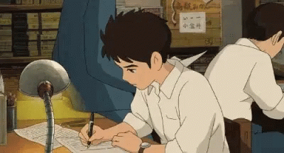

My education has been an important part of my life and has helped shape me into the person I am today. I have had the opportunity to attend some great schools and learn from some fantastic teachers, which has allowed me to gain a wide range of knowledge and skills.
One of the most valuable things that I have learned through my education is the importance of hard work and dedication. I have learned that if I want to succeed, I need to be willing to put in the effort and not give up when things get tough. This has helped me to become more disciplined and motivated, and has allowed me to achieve some of my biggest goals.
Another important lesson that I have learned through my education is the value of critical thinking and problem-solving. I have learned how to approach challenges in a logical and systematic way, and how to evaluate different options and make informed decisions. This has been especially useful in my studies and in my personal life, and has helped me to become more confident and independent.
Overall, my education has been a valuable and rewarding experience, and has helped me to grow and develop in many ways. I am grateful for the opportunities that I have had and for the knowledge and skills that I have gained, and I look forward to continuing to learn and grow in the future.